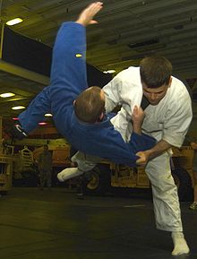
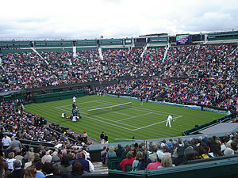
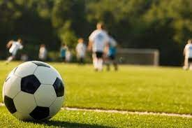
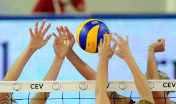

Džudo je borilačka veština i olimpijski sport nastao kao skup probranih tehnika iz džijudžicua. Džijudžicu je u to vreme u Japanu bilo zajedničko ime za sve borilačke veštine (udaračke i rvačke). Tada je osnivač džudoa - Džigoro Kano, koji je savladao nekoliko stilova Džijudžicua, odlučio uzeti ono najbolje od svake i odbaciti nepotrebno. Džudo je kreiran kao fizičko, mentalno i moralno obrazovanje u Japanu. On se generalno karakteriše kao moderna borilačka veština. Njegovo najprominentnije svojstvo je njegov takmičarski element, pri čemu je cilj da se bilo baci ili obori protivnik na zemlju, imobilizirajući ili inače savladavajući protivnika držanjem, ili prisiljavajući protivnika da se pokori koristeći se zglobnim zaključavanjem ili obuhvatom oko vrata. Udarci i pritisci rukama i stopalama kao i oružana odbrana su deo džudoa, ali samo u unapred dogovorenoj formi i nisu dozvoljeni na džudo takmičenjima ili slobodnoj vežbi. Osoba koja praktikuje džudo se naziva džudoka.
Tenis je sport sa reketima koji igraju dva igrača (singl) ili dva tima od po dva igrača (dubl). Igrači koriste reket za tenis da bi prebacili lopticu u protivnički deo terena preko mreže koja se nalazi na sredini terena. Počeo je da se igra u Engleskoj u 19. veku. Vrlo brzo je počeo da se širi po zemljama u kojima se govori engleski jezik, i to najviše među višim staležom. Tenis je danas Olimpijski sport i igraju ga svi ljudi, nezavisno od društvenog statusa. Pravila igranja su ista još od 90-ih godina 19. veka. Izuzetak je uvođenje taj-brejka 70-ih godina 20. veka.
Fudbal je kolektivni sport koji se igra između dve ekipe, sastavljene od po jedanaest igrača. Fudbal je trenutno najpopularniji sport na svetu. Igra se u preko 200 zemalja. Mogu ga igrati ljudi svih godišta i oba pola. Često se o fudbalu govori kao o „najvažnijoj sporednoj stvari na svetu“. Igra se fudbalskom loptom na pravougaonom igralištu s travnatom ili veštačkom podlogom. Golovi su smešteni jedan nasuprot drugom na kraju uže strane igrališta. Cilj igre je ubaciti loptu u protivnički gol bilo kojim delom tela osim rukom. Jedino golman može u ograničenom prostoru, takozvanom šesnaestercu, igrati rukom. Pobednik utakmice je ekipa koja na kraju utakmice postigne više golova (pogodaka). Savremena fudbalska igra razvila se u Engleskoj posle stvaranja prvog fudbalskog saveza 1863. godine. Prva pravila datiraju iz iste godine, a sa manjim promenama održala su se i do danas. Najviše fudbalsko telo je FIFA. FIFA organizuje Svetsko prvenstvo u fudbalu, najprestižnije sportsko takmičenje uopšte.
Odbojka je vrsta timskog i olimpijskog sporta gde se lopta udara rukom preko mreže na protivničku stranu. Tim čine šest igrača gde svako ima svoju funkciju. Tim se sastoji od tehničara, korektora, dva primača, srednjeg blokera i libera. Tehničar je mozak ekipe i on uvek stoji u blizini mreže. Blokeri takođe stoje kod mreže i njihova uloga je da blokiraju protivnički smeč. Korektor smečuje, a primači i libero primaju servis. Moderna odbojka se igra na tri dobijena seta, do 25 poena. Kada i jedna i druga ekipa imaju po dva dobijena seta, igra se peti set, tzv. TAJ-BREJK do 15 poena. U timu je 12 igrača, ali je samo 6 na terenu. Ostali su na klupi, oni su zamene. Libero nikada ne servira.
